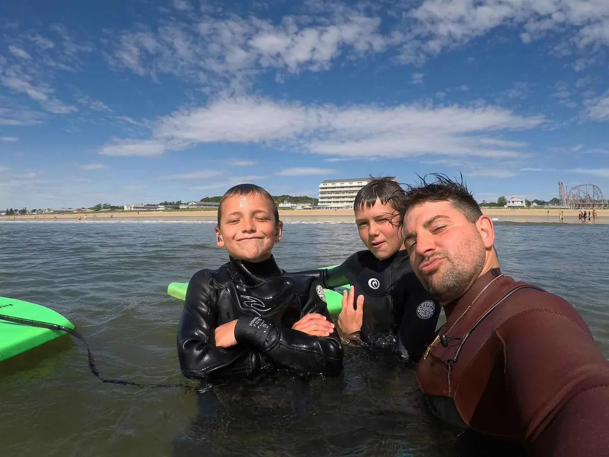

Our story
Meet Blake.
Missy and Blake opened Corner’s with their savings. Blake has been surfing since he was 12 and teaches the lessons himself.
“Our goal is to have you up and riding waves within minutes of entering the ocean.”
Blake · Founder & instructor
Never surfed before? That’s what the lessons are for.
